Đối với các chức năng liên quan đến dịch vụ file (lưu ảnh, lưu file TXT/EXCEL, xóa ảnh, v.v.), đã được nâng cấp đồng bộ nhằm nâng cao hiệu suất sản phẩm.
| Các phiên bản dịch vụ đã hỗ trợ |
|---|
| Phiên bản 6.2.231 trở lên (bao gồm bản Deep Learning và 3D) |
| Phiên bản 6.3.220 trở lên |
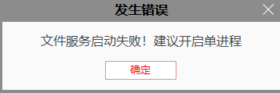
Nguyên nhân: Tiến trình dịch vụ không hỗ trợ nhiều tiến trình cùng sử dụng, đã mở VA thứ nhất rồi lại mở VA thứ hai.
Cách khắc phục: Không khuyến nghị mở đồng thời 2 hoặc nhiều VA trên cùng một thiết bị. Khi mở đồng thời, một trong các VA sẽ gặp lỗi lưu ảnh thất bại.
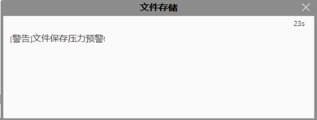
Hiện tượng: Trong quá trình chạy phần mềm, góc dưới bên phải xuất hiện thông báo “[Cảnh báo] Áp lực lưu file quá lớn!”
Nguyên nhân: Áp lực lưu ảnh của dự án lớn, nhắc nhở người dùng hiện tại áp lực lưu ảnh đã đạt ngưỡng tới hạn.
Cách khắc phục: Hiện tại chưa ảnh hưởng đến việc lưu ảnh bình thường, nếu áp lực tiếp tục tăng sẽ xuất hiện lỗi vấn đề 3.
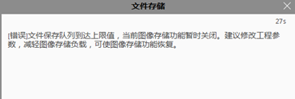
Hiện tượng: Trong quá trình chạy phần mềm, góc dưới bên phải xuất hiện thông báo “Hàng đợi lưu file đã đạt giới hạn, chức năng lưu trữ ảnh hiện tại tạm thời bị tắt. Khuyến nghị chỉnh sửa tham số dự án, giảm tải lưu trữ ảnh để khôi phục chức năng lưu ảnh.”
Nguyên nhân: Áp lực lưu ảnh của dự án quá lớn.
Cách khắc phục: Sửa đổi dự án, giảm áp lực lưu ảnh hoặc thêm công cụ delay để kéo dài CT thực thi dự án; hoặc liên hệ nhà sản xuất thiết bị để thay ổ cứng hiệu năng cao hơn.
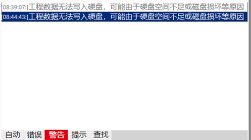
Hiện tượng: Trong quá trình chạy phần mềm, cửa sổ cảnh báo xuất hiện thông báo “Không thể ghi dữ liệu dự án vào ổ cứng, có thể do dung lượng ổ cứng không đủ hoặc ổ đĩa bị hỏng”.
Nguyên nhân: Có thể do dung lượng ổ cứng không đủ hoặc ổ đĩa đã hỏng.
Cách khắc phục: Kiểm tra dung lượng còn lại của ổ đĩa chứa đường dẫn lưu ảnh; nếu ổ đĩa hỏng thì cần thay thế.
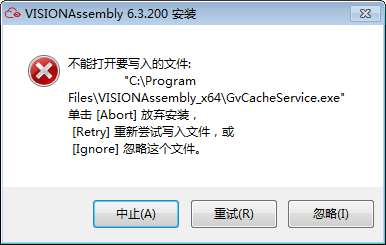
Hiện tượng: Khi cài đặt phần mềm, xuất hiện lỗi “Không thể mở file cần ghi”.
Nguyên nhân: Có thể do dung lượng ổ cứng không đủ.
Cách khắc phục: Nhấn “Hủy bỏ”, chọn ổ đĩa có dung lượng đủ để cài đặt lại.
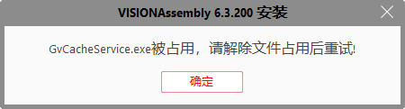
Hiện tượng: Khi cài đặt phần mềm, xuất hiện lỗi “GvCacheService.exe đang bị chiếm dụng, vui lòng giải phóng file rồi thử lại”.
Nguyên nhân: Có tiến trình nào đó đang sử dụng tiến trình dịch vụ “GvCacheService”.
Cách khắc phục: Khởi động lại máy tính để giải phóng chiếm dụng; sau đó cài đặt lại phần mềm.
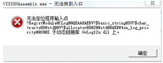
Hiện tượng: Xuất hiện lỗi “Không thể định vị điểm nhập chương trình”.
Nguyên nhân: Dịch vụ chưa được gỡ bỏ đúng cách, thậm chí vẫn đang chạy, dẫn đến chiếm dụng thư viện ghi log nên không thể thay thế được.
Cách khắc phục: Gỡ bỏ dịch vụ thủ công (xem chi tiết ở Phụ lục 3 “Gỡ bỏ dịch vụ thủ công”).
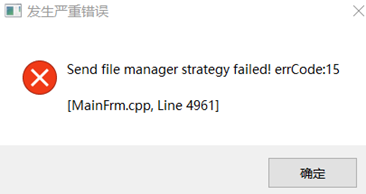
Hiện tượng: Xuất hiện thông báo lỗi “Send file manager strategy failed! errCode:15”.
Nguyên nhân: Có thể tiến trình dịch vụ hiện không ở trạng thái chạy, đã bị dừng.
Cách khắc phục: Khởi động lại tiến trình dịch vụ thủ công (xem chi tiết ở Phụ lục 2).
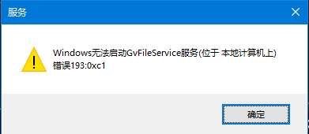
Hiện tượng: Khi khởi động lại dịch vụ, xuất hiện lỗi “Không thể khởi động dịch vụ GvFileService lỗi 193:0xc1”.
Nguyên nhân: Có thể do thư mục gốc của ổ cài đặt hệ thống tồn tại file tên “program”.
Cách khắc phục: Xóa file “program” ở thư mục gốc ổ cài đặt hệ thống; sau đó khởi động lại dịch vụ.
Thông qua Trình quản lý tác vụ → Dịch vụ → tìm dịch vụ (ví dụ: GvCacheService) để xem trạng thái hiện tại;
Ghi chú: Bình thường trạng thái là “Đang chạy”, nếu hiển thị “Đã dừng” thì cần khởi động lại dịch vụ thủ công; xem chi tiết ở Phụ lục 2 “Khởi động lại dịch vụ thủ công”
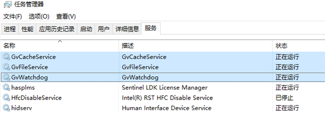
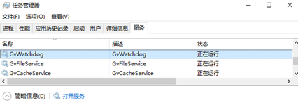
Hiện tượng: Trạng thái dịch vụ trong Trình quản lý tác vụ hiển thị “Đã dừng”
Cách khắc phục: Khởi động lại dịch vụ thủ công; chọn dịch vụ (ví dụ: GvWatchdog) → chuột phải → Bắt đầu; Đối với hệ điều hành Windows 7 cần mở giao diện Dịch vụ để khởi động lại, các bước như sau: Trình quản lý tác vụ → chọn dịch vụ → chuột phải → Mở dịch vụ → tìm dịch vụ → chuột phải → Khởi động
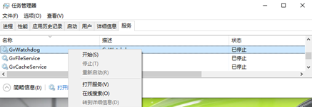
Cách 1: Trong thư mục cài đặt phần mềm VA, tìm file “ServicesUninstall” (định dạng batch), chuột phải → Chạy với quyền quản trị viên
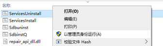
Cách 2: Sử dụng lệnh CMD để gỡ bỏ dịch vụ
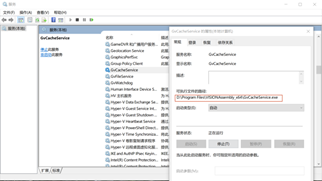
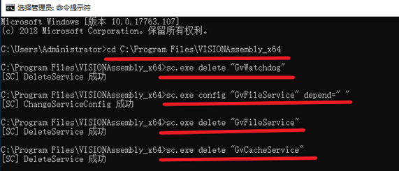
Lệnh 1: cd C:\Program Files\VISIONAssembly_x64 (chuyển đến đường dẫn cài đặt dịch vụ)
Lệnh 2: sc.exe delete “GvWatchdog” (gỡ bỏ dịch vụ “GvWatchdog”)
Lệnh 3: sc.exe config “GvFileService” depend=“ ” (xóa phụ thuộc)
Ghi chú: Với Windows 7, sau dấu “=” cần thêm khoảng trắng
Lệnh 4: sc.exe delete “GvFileService” (gỡ bỏ dịch vụ “GvFileService”)
Lệnh 5: sc.exe delete “GvCacheService” (gỡ bỏ dịch vụ “GvCacheService”)
Trong thư mục cài đặt phần mềm tìm file “Servicesinstall.bat”, chuột phải → Chạy với quyền quản trị viên
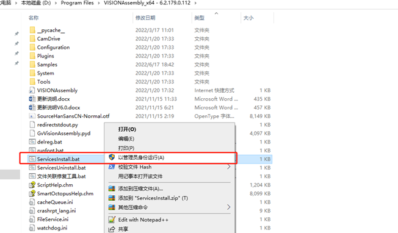